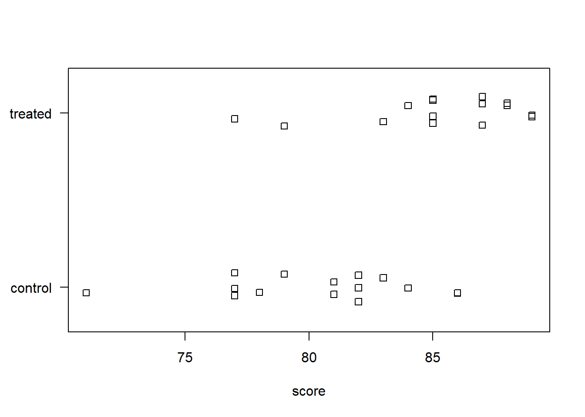
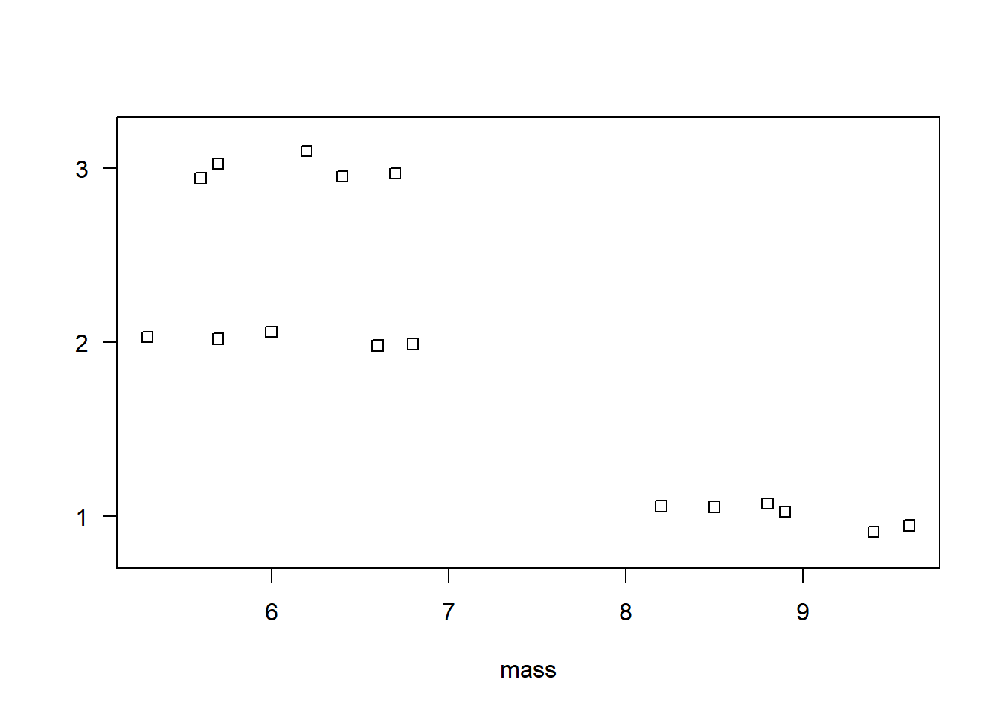
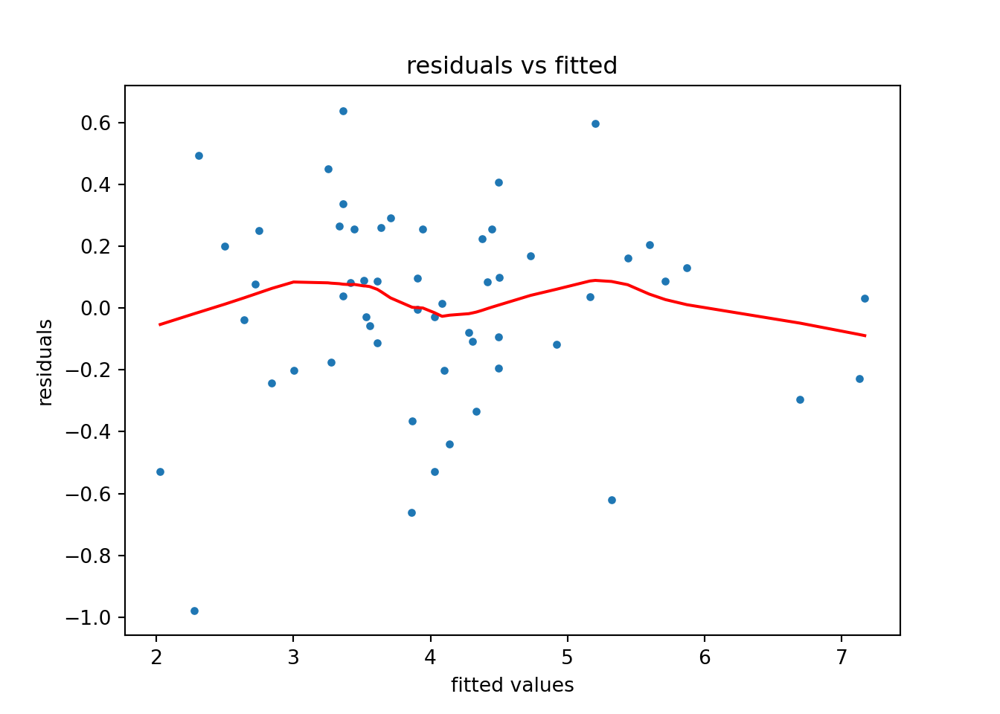
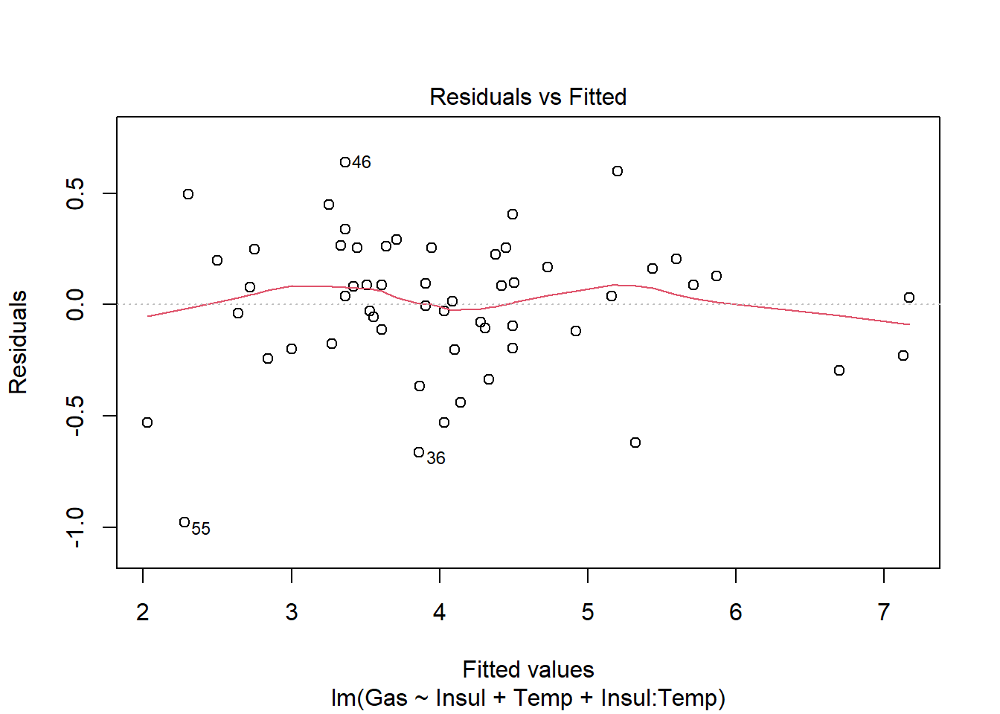

Chapter 8 Selected Topics in Statistical Inference
This chapter looks at performing selected statistical analyses. It is not comprehensive. The focus is on implementation using Python and R. Good statistical practice is more than knowing which function to use. At a minimum we recommend reading the article, Ten Simple Rules for Effective Statistical Practice (Kass et al. 2016).
8.1 Comparing group means
Many research studies compare mean values of some quantity of interest between two or more groups. A t test analyzes two group means. An Analysis of Variance, or ANOVA, analyzes three or more group means. Both the t test and ANOVA are special cases of a linear model.
To demonstrate the t test, we examine fictitious data on 15 scores between two groups of subjects. The “control” group was tested as-is while the “treated” group experienced a particular intervention. Of interest is (1) whether or not the mean scores differ meaningfully between the treated and control groups, and (2) if they do differ, how are they different?
To demonstrate the ANOVA test, we use data from The Analysis of Biological Data (3rd ed)(Whitlock and Schluter 2020) on the mass of pine cones (in grams) from three different environments in North America. Of interest is (1) whether or not the mean mass of pine cones differ meaningfully between the three locations, and (2) if they do differ, how are they different?
We usually assess the first question in each scenario with a hypothesis test and p-value. The null hypothesis is no difference between the means. The p-value is the probability of the observed differences between the groups (or more extreme differences) assuming the null hypothesis is true. A small p-value, traditionally less then 0.05, provides evidence against the null. For example, a p-value of 0.01 says there’s a 1% chance of sampling data as different as this (or more different) if there really was no difference between the groups. Note that p-values don’t tell you how two or more statistics differ. See the ASA Statement on p-values.
We assess the second question in each scenario by calculating confidence intervals on the difference in means. This is more informative than a p-value. A confidence interval gives us information on the uncertainty, direction and magnitude of a difference in means. For example, a 95% confidence interval of [2, 15] tells us the data is consistent with a difference anywhere between 2 and 15 and that the mean of one group appears to be at least 2 units larger than the mean of the other group. Note that a 95% confidence interval does not mean there is a 95% probability that the true value is in the interval. The confidence interval either captured the true value or it did not. We don’t know. However the process of calculating the confidence interval works roughly 95% of the time.
Python
t-test
Our data is available as a Pandas dataframe. It’s small enough to view in its entirety.
ch8_d1## score group
## 0 77.0 control
## 1 81.0 control
## 2 77.0 control
## 3 86.0 control
## 4 81.0 control
## 5 77.0 control
## 6 82.0 control
## 7 83.0 control
## 8 82.0 control
## 9 79.0 control
## 10 86.0 control
## 11 82.0 control
## 12 78.0 control
## 13 71.0 control
## 14 84.0 control
## 15 85.0 treated
## 16 85.0 treated
## 17 89.0 treated
## 18 88.0 treated
## 19 87.0 treated
## 20 89.0 treated
## 21 88.0 treated
## 22 85.0 treated
## 23 77.0 treated
## 24 87.0 treated
## 25 85.0 treated
## 26 84.0 treated
## 27 79.0 treated
## 28 83.0 treated
## 29 87.0 treatedA stripchart is one of many ways to visualize numeric data between two groups. Here we use the seaborn function stripplot(). It appears the treated group had higher scores.
import seaborn as sns
import matplotlib.pyplot as plt
plt.clf()
sns.stripplot(x="score", y="group", data=ch8_d1)
plt.show()One way to perform a t test in Python is via the CompareMeans() function and its associated methods available in the statsmodels package. Below we import statsmodels.stats.api as “sms”.
import statsmodels.stats.api as smsWe first extract the data we want to compare as pandas Series.
d_control = ch8_d1.query('group == "control"')['score']
d_treated = ch8_d1.query('group == "treated"')['score']Next we create Descriptive statistics objects using the DescrStatsW() function.
control = sms.DescrStatsW(d_control)
treated = sms.DescrStatsW(d_treated)Descriptive statistics objects have attributes such as mean and std (standard deviation). Below we print the mean and standard deviation of each group. We also round the standard deviation to three decimal places and place a line break before printing the standard deviation.
print("control mean:", control.mean, "\ncontrol std:", round(control.std, 3))## control mean: 80.4
## control std: 3.844print("treated mean:", treated.mean, "\ntreated std:", round(treated.std, 3))## treated mean: 85.2
## treated std: 3.331Next we create a CompareMeans means object using the CompareMeans() function. The required inputs are Descriptive statistics objects. We save the result as “ttest”.
ttest = sms.CompareMeans(control, treated)Now we can use various methods with the “ttest” object. To see the result of a two sample t test assuming unequal variances, along with a confidence interval on the differences, use the summary method with usevar='unequal'.
print(ttest.summary(usevar='unequal'))## Test for equality of means
## ==============================================================================
## coef std err t P>|t| [0.025 0.975]
## ------------------------------------------------------------------------------
## subset #1 -4.8000 1.359 -3.531 0.001 -7.587 -2.013
## ==============================================================================The p-value of 0.001 is small, providing good evidence that the difference in means we witnessed reflects a real difference in the population. The confidence interval on the difference in means tells us the data is consistent with a difference between -7 and -2. It appears we can expect the control group to score at least 2 points lower than the treated group.
ANOVA
Our data is available as a Pandas dataframe. It’s small enough to view in its entirety.
ch8_d2## mass location
## 0 9.6 1
## 1 9.4 1
## 2 8.9 1
## 3 8.8 1
## 4 8.5 1
## 5 8.2 1
## 6 6.8 2
## 7 6.6 2
## 8 6.0 2
## 9 5.7 2
## 10 5.3 2
## 11 6.7 3
## 12 6.4 3
## 13 6.2 3
## 14 5.7 3
## 15 5.6 3Again we use a stripchart to visualize the three groups of data. It appears the pine cones in location 1 have a higher mass.
plt.clf()
sns.stripplot(x="mass", y="location", data=ch8_d2)
plt.show()We can calculate means using the groupby and mean methods.
ch8_d2['mass'].groupby(ch8_d2['location']).mean()## location
## 1 8.90
## 2 6.08
## 3 6.12
## Name: mass, dtype: float64One way to perform an ANOVA test in Python is via the anova_oneway() function, also available in the statsmodels package.
The anova_oneway() function can perform an ANOVA on a pandas Dataframe with the first argument specifying the numeric data and the second argument the grouping variable. We also set use_var='equal' to replicate the R output below.
sms.anova_oneway(ch8_d2.mass, ch8_d2.location, use_var='equal')## <class 'statsmodels.stats.base.HolderTuple'>
## statistic = 50.085429769392036
## pvalue = 7.786760128813737e-07
## df = (2.0, 13.0)
## df_num = 2.0
## df_denom = 13.0
## nobs_t = 16.0
## n_groups = 3
## means = array([8.9 , 6.08, 6.12])
## nobs = array([6., 5., 5.])
## vars_ = array([0.28 , 0.387, 0.217])
## use_var = 'equal'
## welch_correction = True
## tuple = (50.085429769392036, 7.786760128813737e-07)The small p-value of 0.0000007 provides strong evidence that the difference in means we witnessed reflects a real difference in the population.
A common follow-up to an ANOVA is Tukey’s Honestly Significant Differences (HSD), which computes differences between all possible pairs and returns adjusted p-values and confidence intervals to account for the multiple comparisons. To carry this out in the statsmodels package, we need to first create a MultiComparison object using the multicomp.MultiComparison() function. Then we use the tukeyhsd() method to compare the means with corrected p-values.
mc = sms.multicomp.MultiComparison(ch8_d2.mass, ch8_d2.location)
print(mc.tukeyhsd())## Multiple Comparison of Means - Tukey HSD, FWER=0.05
## ====================================================
## group1 group2 meandiff p-adj lower upper reject
## ----------------------------------------------------
## 1 2 -2.82 0.0 -3.6863 -1.9537 True
## 1 3 -2.78 0.0 -3.6463 -1.9137 True
## 2 3 0.04 0.9925 -0.8648 0.9448 False
## ----------------------------------------------------The difference in means between locations 2 and 1 (2 - 1) and locations 3 and 1 (3 - 1) are about -2.8. The difference in means between locations 3 and 2 (3 - 2) is inconclusive. It seems to be small but we’re not sure if the difference is positive or negative.
R
t-test
The str() function allows to take a quick look at the data frame ch8_d1. One column contains the scores, the other column indicates which group the subject was in (control vs treated).
str(ch8_d1)## 'data.frame': 30 obs. of 2 variables:
## $ score: num 77 81 77 86 81 77 82 83 82 79 ...
## $ group: chr "control" "control" "control" "control" ...A stripchart is one of many ways to visualize numeric data between two groups. Here we use the base R function stripchart(). The formula score ~ group says to plot score by group. The las = 1 argument says to rotate the y-axis labels. The method = "jitter" arguments says to randomly scatter the points vertically so they don’t overplot. It appears the treated group had higher scores.
stripchart(score ~ group, data = ch8_d1, las = 1, method = "jitter")
To calculate the means between the two groups we can use the aggregate() function. Again the formula score ~ group says to aggregate score by group. We specify mean so that we calculate the mean between the two groups. Some other functions we could specify include median, sd, or sum. The sample mean of the treated group is about 5 points higher than the control group.
aggregate(score ~ group, data = ch8_d1, mean)## group score
## 1 control 80.4
## 2 treated 85.2Is this difference meaningful? What if we took more samples? Would each sample result in similar differences in the means? A t test attempts to answer this.
The t.test() function accommodates formula notation allowing us to specify that we want to calculate mean score by group.
t.test(score ~ group, data = ch8_d1)##
## Welch Two Sample t-test
##
## data: score by group
## t = -3.5313, df = 27.445, p-value = 0.001482
## alternative hypothesis: true difference in means between group control and group treated is not equal to 0
## 95 percent confidence interval:
## -7.586883 -2.013117
## sample estimates:
## mean in group control mean in group treated
## 80.4 85.2The p-value of 0.0015 is small, providing good evidence that the difference in means we witnessed reflects a real difference in the population. The confidence interval on the difference in means tells us the data is consistent with a difference between -7 and -2. It appears we can expect the control group to score at least 2 points lower than the treated group.
ANOVA
The str() function allows to take a quick look at the data frame ch8_d2. One column contains the mass of the pine cones, the other column indicates which location the pine cone was found.
str(ch8_d2)## 'data.frame': 16 obs. of 2 variables:
## $ mass : num 9.6 9.4 8.9 8.8 8.5 8.2 6.8 6.6 6 5.7 ...
## $ location: chr "1" "1" "1" "1" ...Again we use a stripchart to visualize the three groups of data. It appears the pine cones in location 1 have a higher mass.
stripchart(mass ~ location, data = ch8_d2, las = 1, method = "jitter")
To calculate the means between the three groups we can use the aggregate() function. Again the formula mass ~ location says to aggregate mass by location. We specify mean so that we calculate the mean between the three groups.
aggregate(mass ~ location, data = ch8_d2, mean)## location mass
## 1 1 8.90
## 2 2 6.08
## 3 3 6.12Is this difference meaningful? ANOVA attempts to answer this.
The aov() function carries out the ANOVA test and also accommodates formula notation. It’s usually preferable to save the ANOVA result into an object and call summary() on the object.
aov1 <- aov(mass ~ location, data = ch8_d2)
summary(aov1)## Df Sum Sq Mean Sq F value Pr(>F)
## location 2 29.404 14.702 50.09 7.79e-07 ***
## Residuals 13 3.816 0.294
## ---
## Signif. codes: 0 '***' 0.001 '**' 0.01 '*' 0.05 '.' 0.1 ' ' 1The small p-value of 0.0000007 provides strong evidence that the difference in means we witnessed reflects a real difference in the population.
Unlike the t.test() output, the aov() summary does not provide confidence intervals on differences in means. That’s because there are many kinds of differences we might want to assess. A common and easy procedure is Tukey’s Honestly Significant Differences (HSD), which computes differences between all possible pairs and returns adjusted p-values and confidence intervals to account for the multiple comparisons. Base R provides the TukeyHSD() function for this task. Call it on the ANOVA object.
TukeyHSD(aov1)## Tukey multiple comparisons of means
## 95% family-wise confidence level
##
## Fit: aov(formula = mass ~ location, data = ch8_d2)
##
## $location
## diff lwr upr p adj
## 2-1 -2.82 -3.6862516 -1.9537484 0.0000028
## 3-1 -2.78 -3.6462516 -1.9137484 0.0000033
## 3-2 0.04 -0.8647703 0.9447703 0.9925198The difference in means between locations 2 and 1 (2 - 1) and locations 3 and 1 (3 - 1) are about -2.8. The difference in means between locations 3 and 2 (3 - 2) is inconclusive. It seems to be small but we’re not sure if the difference is positive or negative.
8.2 Comparing group proportions
It is often of interest to compare proportions between two groups. Sometimes this is referred to as a two-sample proportion test. To demonstrate we use an exercise from the text Introductory Statistics with R (Dalgaard 2008) (p.154). We are told that 210 out of 747 patients died of Rocky Mountain spotted fever in the western United States. That’s a proportion of 0.281. In the eastern United States, 122 out 661 patients died. That’s a proportion of 0.185. Is the difference in proportions statistically significant? In other words, assuming there is no difference in the fatality rate between the two regions, is this difference in proportions surprising?
Python
A two-sample proportion test can be carried out in Python using the test_proportions_2indep() function from the statsmodels package. The two proportions being compared must be independent.
The first argument is the number of successes or occurrences for the first proportion. The second argument is the number of total trials for the first group. The third and fourth arguments are the occurrences and total number of trials for the second group, respectively.
import statsmodels.stats.api as sms
ptest = sms.test_proportions_2indep(210, 747, 122, 661)We can extract the p-value of the test and the difference in proportions using the pvalue and diff attributes, respectively.
ptest.pvalue## 1.632346798072468e-05# rounded to 4 decimal places
round(ptest.diff, 4)## 0.0966To calculate a 95% confidence interval for the difference in proportions we need to use the confint_proportions_2indep() function.
pdiff = sms.confint_proportions_2indep(210, 747, 122, 661)
pdiff## (0.05241555145475882, 0.13988087590630482)The result is returned as a tuple with an extreme amount of precision. We recommend rounding these values to few decimal places. Here’s one way using f strings. Notice we extract each element of the “pdiff” tuple and round to 5 decimal places.
print(f"({round(pdiff[0],5)}, {round(pdiff[1],5)})")## (0.05242, 0.13988)This results are slightly different from the R example below. That’s because the test_proportions_2indep() and confint_proportions_2indep() functions use different methods. See their respective help pages to learn more about the methods available and other function arguments.
test_proportions_2indep help page
confint_proportions_2indep help page
R
A two-sample proportion test in R can be carried out with the prop.test() function. The first argument, x, is the number of “successes” or “occurrences” of some event for each group. The second argument, n, is the number of total trials for each group.
prop.test(x = c(210, 122), n = c(747, 661))##
## 2-sample test for equality of proportions with continuity correction
##
## data: c(210, 122) out of c(747, 661)
## X-squared = 17.612, df = 1, p-value = 2.709e-05
## alternative hypothesis: two.sided
## 95 percent confidence interval:
## 0.05138139 0.14172994
## sample estimates:
## prop 1 prop 2
## 0.2811245 0.1845688The proportion of patients who died in the western US is about 0.28. The proportion who died in the eastern US is about 0.18. The small p-value says there is a very small chance of seeing a difference as large as this (or larger) if there really was no difference in the proportions. The confidence interval on the difference of proportions ranges from 0.05 to 0.14, indicating that this fever seems to kill at least 5% more patients in the western US.
Sometimes data is presented in a 2-way table with successes and failures. We can present the preceding data in a table as follows using the matrix() function.
fever <- matrix(c(210, 122,
747-210, 661-122), ncol = 2)
rownames(fever) <- c("western US", "eastern US")
colnames(fever) <- c("died", "lived")
fever## died lived
## western US 210 537
## eastern US 122 539When the table is constructed in this fashion with “successes” in the first column and “failures” in the second column, we can feed the table directly to the prop.test() function. (Obviously “success” here means “experienced the event of interest”.)
prop.test(fever)##
## 2-sample test for equality of proportions with continuity correction
##
## data: fever
## X-squared = 17.612, df = 1, p-value = 2.709e-05
## alternative hypothesis: two.sided
## 95 percent confidence interval:
## 0.05138139 0.14172994
## sample estimates:
## prop 1 prop 2
## 0.2811245 0.1845688The chi-squared test statistic is reported as X-squared = 17.612. This is the same statistic reported if we ran a chi-squared test of association using the chisq.test() function.
chisq.test(fever)##
## Pearson's Chi-squared test with Yates' continuity correction
##
## data: fever
## X-squared = 17.612, df = 1, p-value = 2.709e-05This tests the null hypothesis of no association between location in the US and fatality of the fever. The result is identical to prop.test() output, however there is no indication of the nature of association.
8.3 Linear modeling
Linear modeling attempts to assess if or how the variability a numeric variable depends on one or more predictor variables. This is often referred to as regression modeling or multiple regression. While it is relatively easy to “fit a model” and generate lots of output, the model we fit may not be very good. There are many decisions we have to make when proposing a model. Which predictors do we include? Will they interact? Do we allow for non-linear effects? Answering these kinds of questions require subject matter expertise.
We walk through a somewhat simple example using data on weekly gas consumption. The data is courtesy of the R package MASS (Venables and Ripley 2002a). The documentation describes the data as follows:
“Mr Derek Whiteside of the UK Building Research Station recorded the weekly gas consumption and average external temperature at his own house in south-east England for two heating seasons, one of 26 weeks before, and one of 30 weeks after cavity-wall insulation was installed. The object of the exercise was to assess the effect of the insulation on gas consumption.”
The whiteside data frame has 56 rows and 3 columns:
Insul: A factor, before or after insulation.Temp: average outside temperature in degrees Celsius.Gas: weekly gas consumption in 1000s of cubic feet.
Below we demonstrate modeling Gas as a function of Insul, Temp, and their interaction.
Obviously this is not a comprehensive treatment of linear modeling.
Python
In Python, the OLS() function in the statsmodels package fits a linear model.
In this example, we fit a linear model to predict gas prices from insulation, temperature, and the interaction between insulation and temperature.
The basic construction is to first list your dependent or response variable, then a tilde (~), and then your predictor variables, or terms, separated by plus operators (+). Listing two variables separated by a colon (:) indicates we wish to fit an interaction for those variables. The variables in the formula correspond to columns in a pandas DataFrame. Users specify the pandas DataFrame using the data argument.
import statsmodels.api as sm
import statsmodels.formula.api as smf
model = smf.ols('Gas ~ Insul + Temp + Insul:Temp', data=whiteside)
results = model.fit() # fit the linear modelOnce you fit your model, you can extract information about it using several functions. The most commonly used include:
summary(): summary of model coefficients with standard errors and test statisticsparams: model coefficientsconf_int(): 95% confidence interval of model coefficients- statsmodels provides functions for diagnostic plots. A few examples are shown below.
The summary() function produces the standard regression summary one typically finds in a statistics textbook.
print(results.summary())## OLS Regression Results
## ==============================================================================
## Dep. Variable: Gas R-squared: 0.928
## Model: OLS Adj. R-squared: 0.924
## Method: Least Squares F-statistic: 222.3
## Date: Thu, 12 May 2022 Prob (F-statistic): 1.23e-29
## Time: 10:26:25 Log-Likelihood: -14.100
## No. Observations: 56 AIC: 36.20
## Df Residuals: 52 BIC: 44.30
## Df Model: 3
## Covariance Type: nonrobust
## =======================================================================================
## coef std err t P>|t| [0.025 0.975]
## ---------------------------------------------------------------------------------------
## Intercept 6.8538 0.136 50.409 0.000 6.581 7.127
## Insul[T.After] -2.1300 0.180 -11.827 0.000 -2.491 -1.769
## Temp -0.3932 0.022 -17.487 0.000 -0.438 -0.348
## Insul[T.After]:Temp 0.1153 0.032 3.591 0.001 0.051 0.180
## ==============================================================================
## Omnibus: 6.016 Durbin-Watson: 1.854
## Prob(Omnibus): 0.049 Jarque-Bera (JB): 4.998
## Skew: -0.626 Prob(JB): 0.0822
## Kurtosis: 3.757 Cond. No. 31.6
## ==============================================================================
##
## Notes:
## [1] Standard Errors assume that the covariance matrix of the errors is correctly specified.The following code produces a fitted vs residual plot for the model.
plt.figure()
smoothed_line = sm.nonparametric.lowess(results.resid, results.fittedvalues)
plt.plot(results.fittedvalues, results.resid, ".")
plt.plot(smoothed_line[:,0], smoothed_line[:,1],color = 'r')
plt.xlabel("fitted values")
plt.ylabel("residuals")
plt.title("residuals vs fitted")
plt.show()
The following code plots model predictions. Each line of the plot represents a level of the variable “Insul”.
import numpy as np
import pandas as pd
from statsmodels.sandbox.predict_functional import predict_functional
# create DataFrame (wrt Inusl == "Before") to pass into predict function
temp = np.linspace(whiteside["Temp"].min(), whiteside["Temp"].max())
insul_before = ["Before"]*temp.shape[0]
# whiteside_before = pd.DataFrame({"Temp": temp, "Insul": insul_before})
whiteside_before = {"Temp": temp, "Insul": insul_before, "Insul:Temp":[0]*temp.shape[0]}
# pr, cb, fv = predict_functional(results, "Temp", values=whiteside_before, ci_method='scheffe')
before_predict_object = results.get_prediction(whiteside_before)
before_predictions = before_predict_object.predicted_mean
before_ci = before_predict_object.conf_int()
# create DataFrame (wrt Inusl == "After") to pass into predict function
insul_after = ["After"]*temp.shape[0]
whiteside_after = pd.DataFrame({"Temp": temp, "Insul": insul_after, "Insul:Temp":temp})
after_predictions_object = results.get_prediction(whiteside_after)
after_predictions = after_predictions_object.predicted_mean
after_ci = after_predictions_object.conf_int()
# plot results
plt.figure()
plt.plot(temp, before_predictions, color = "red", label="Before")
plt.fill_between(temp, before_ci[:,0], before_ci[:,1], color = "red", alpha = 0.1)
plt.plot(temp, after_predictions, color="blue", label="After")
plt.fill_between(temp, after_ci[:,0], after_ci[:,1], color = "blue", alpha = 0.1)
plt.legend(title="Insul")
plt.title("Predicted values of Gas")
plt.xlabel("Temp")
plt.ylabel("Gas")
plt.show()We see that after installing insulation, gas consumption fell considerably, and that the effect of temperature on gas consumption is less pronounced.
R
The lm() function fits a linear model in R using whatever model we propose. We specify models using a special syntax. The basic construction is to first list your dependent or response variable, then a tilde (~), and then your predictor variables, or terms, separated by plus operators (+). Listing two variables separated by a colon (:) indicates we wish to fit an interaction for those variables. See ?formula for further details on formula syntax.
It’s considered best practice to reference variables in a data frame and indicate the data frame using the data argument. Though not required, you’ll almost always want to save the result to an object for further inquiry.
m <- lm(Gas ~ Insul + Temp + Insul:Temp, data = whiteside)Once you fit your model, you can extract information about it using several functions. The most commonly used include:
summary(): summary of model coefficients with standard errors and test statisticscoef(): model coefficientsconfint(): 95% confidence interval of model coefficientsplot(): a set of four diagnostic plots
The summary() function produces the standard regression summary one typically finds described in a statistics textbook.
summary(m)##
## Call:
## lm(formula = Gas ~ Insul + Temp + Insul:Temp, data = whiteside)
##
## Residuals:
## Min 1Q Median 3Q Max
## -0.97802 -0.18011 0.03757 0.20930 0.63803
##
## Coefficients:
## Estimate Std. Error t value Pr(>|t|)
## (Intercept) 6.85383 0.13596 50.409 < 2e-16 ***
## InsulAfter -2.12998 0.18009 -11.827 2.32e-16 ***
## Temp -0.39324 0.02249 -17.487 < 2e-16 ***
## InsulAfter:Temp 0.11530 0.03211 3.591 0.000731 ***
## ---
## Signif. codes: 0 '***' 0.001 '**' 0.01 '*' 0.05 '.' 0.1 ' ' 1
##
## Residual standard error: 0.323 on 52 degrees of freedom
## Multiple R-squared: 0.9277, Adjusted R-squared: 0.9235
## F-statistic: 222.3 on 3 and 52 DF, p-value: < 2.2e-16Calling plot() on a model object produces four different diagnostic plots by default. Using the which argument we can specify which of six possible plots to create. The first one checks the constant variance assumption (ie, that our model is not dramatically over- or under-predicting values.) We hope to see residuals evenly scattered around 0. (See ?plot.lm for more details on the diagnostic plots.)
plot(m, which = 1)
Once we fit a model and we’re reasonably confident that it’s a good model, we may want to visualize it. Three packages in R that help with this are emmeans, effects, and ggeffects. We briefly demonstrate the ggeffects package.
You need to first install the ggeffects package as it does not come with the base R installation. Once installed, load using the library() function.
Once loaded, we can get a basic visualization of our model by using the plot() and ggpredict() functions. This is particularly useful for models with interactions. Use the terms argument to specify which variables to plot. Below we list “Temp” first, which will plot “Temp” on the x axis. Then we list “Insul”, the grouping variable, to indicate we want a separate fit for each level of “Insul”.
# install.pacakges("ggeffects")
library(ggeffects)
plot(ggpredict(m, terms = c("Temp", "Insul")))We see that after installing insulation, gas consumption fell considerably, and that the effect of temperature on gas consumption is less pronounced.
8.4 Logistic regression
Logistic regression attempts to assess if or how the variability a binary variable depends on one or more predictor variables. It is a type of Generalized Linear Model and is commonly used to model the probability of an event occurring. While it is relatively easy to “fit a model” and generate lots of output, the model we fit may not be very good. There are many decisions we have to make when proposing a model. Which predictors do we include? Will they interact? Do we allow for non-linear effects? Answering these kinds of questions require subject matter expertise.
We walk through a basic example using data on low infant birth weight. The data is courtesy of the R package MASS (Venables and Ripley 2002a). According to the documentation, “the data were collected at Baystate Medical Center, Springfield, Mass during 1986.”
We use the data as prepared in the example code found at ?birthwt.
The birthwt data frame has 189 rows and 9 columns:
low: 1 if birth weight less than 2.5 kg, 0 otherwiseage: mother’s age in yearslwt: mother’s weight in pounds at last menstrual periodrace: mother’s race (white, black, other)smoke: smoking status during pregnancy (1 = yes, 0 = no)ptd: previous premature labors (1 = yes, 0 = no)ht: history of hypertension (1 = yes, 0 = no)ui: presence of uterine irritability (1 = yes, 0 = no)ftv: number of physician visits during the first trimester (0, 1, 2+)
Below we demonstrate modeling low as a function of all other predictors.
Obviously this is not a comprehensive treatment of logistic regression.
Python
The Python statistics library statsmodels.formula.api provides the glm function for fitting generalized linear models. We specify how we want to model our data as a formula string in the first argument of the glm function. The format is as follows: dependent/response variable followed by a tilde (~), then the predictor variables separated by a plus sign (+). To indicate we want to fit a logistic regression model we specify family=sm.families.Binomial() since our dependent variable is binary. We also specify our data set in the argument as well.
import statsmodels.api as sm
import statsmodels.formula.api as smf
import pandas as pd
formula = "low ~ age + lwt + race + smoke + ptd + ht + ui + ftv"
mod1 = smf.glm(formula=formula, data=birthwt,
family=sm.families.Binomial()).fit()
print(mod1.summary())## Generalized Linear Model Regression Results
## ==============================================================================
## Dep. Variable: low No. Observations: 189
## Model: GLM Df Residuals: 178
## Model Family: Binomial Df Model: 10
## Link Function: Logit Scale: 1.0000
## Method: IRLS Log-Likelihood: -97.738
## Date: Thu, 12 May 2022 Deviance: 195.48
## Time: 10:26:27 Pearson chi2: 179.
## No. Iterations: 5 Pseudo R-squ. (CS): 0.1873
## Covariance Type: nonrobust
## =================================================================================
## coef std err z P>|z| [0.025 0.975]
## ---------------------------------------------------------------------------------
## Intercept 0.8230 1.245 0.661 0.508 -1.617 3.263
## race[T.black] 1.1924 0.536 2.225 0.026 0.142 2.243
## race[T.other] 0.7407 0.462 1.604 0.109 -0.164 1.646
## smoke[T.1] 0.7555 0.425 1.778 0.075 -0.078 1.589
## ptd[T.1] 1.3438 0.481 2.796 0.005 0.402 2.286
## ht[T.1] 1.9132 0.721 2.654 0.008 0.501 3.326
## ui[T.1] 0.6802 0.464 1.465 0.143 -0.230 1.590
## ftv[T.1] -0.4364 0.479 -0.910 0.363 -1.376 0.503
## ftv[T.2+] 0.1790 0.456 0.392 0.695 -0.715 1.074
## age -0.0372 0.039 -0.962 0.336 -0.113 0.039
## lwt -0.0157 0.007 -2.211 0.027 -0.030 -0.002
## =================================================================================Once we fit a model and we’re reasonably confident that it’s a good model, we may want to visualize it. For example, how does ptd affect the probability of low infant birth weight?
To begin, we create a Pandas DataFrame for our predictors. This needs to be a Pandas DataFrame since we used the formula option when fitting the model. Notice the only variable that changes is ptd. All other variables are held constant. What values you choose to hold them at is up to you, but typical choices are means or medians for numeric predictors, and most populous group for categorical predictors.
# create dictionary of values
d = {'age': 23, 'lwt': 123, 'race': "white",
'smoke' : "0", 'ptd' : ["0","1"], 'ht': "0",
'ui': "0", 'ftv': "0"}
# convert dictionary to Pandas DataFrame.
nd = pd.DataFrame(data=d)Now plug in our new data (nd) into our model using the get_prediction method. See this page. This returns the predictions as a PredictionResults class. We can access the predicted probabilities using the predicted_mean property. See this page.
pred = mod1.get_prediction(exog=nd)
prob = pred.predicted_mean
print(prob)## [0.12360891 0.35093623]We can use the conf_int method to extract the confidence intervals for the predicted probabilities.
ci = pred.conf_int()
print(ci)## [[0.05166761 0.26746827]
## [0.12724595 0.66722908]]Now we use the matplotlib errorbar function to create the plot. The errorbar function requires margin of error, not the lower and upper limits. So we have to do some subtraction to get the lower and upper margin of errors.
lower = [prob[0] - ci[0,0], prob[1] - ci[1,0]]
upper = [ci[0,1] - prob[0], ci[1,1] - prob[1]]Finally we can make the plot.
import matplotlib.pyplot as plt
plt.clf()
plt.errorbar(x = ["0","1"], y = prob,
yerr=[lower, upper], fmt='ok')## <ErrorbarContainer object of 3 artists>plt.xlabel('ptd')
plt.ylabel('low')
plt.title('Predicted probabilities of low')
plt.show()R
The glm() function fits a generalized linear model in R using whatever model we propose. We specify models using a special syntax. The basic construction is to first list your dependent or response variable, then a tilde (~), and then your predictor variables, or terms, separated by plus operators (+). Listing two variables separated by a colon (:) indicates we wish to fit an interaction for those variables. See ?formula for further details on formula syntax.
In addition, glm() requires we specify a family argument to specify the error distribution for the dependent variable. The default is gaussian. For a logistic regression model, we need to specify binomial since our dependent variable is binary.
It’s considered best practice to reference variables in a data frame and indicate the data frame using the data argument. Though not required, you’ll almost always want to save the result to an object for further inquiry.
mod <- glm(low ~ age + lwt + race +
smoke + ptd + ht +
ui + ftv,
data = birthwt, family = binomial)Since we’re modeling low as a function of all other variables in the data frame, we could have used the following syntax, where the period symbolizes all other remaining variables:
mod <- glm(low ~ ., data = birthwt, family = binomial)Once you fit your logistic regression model, you can extract information about it using several functions. The most commonly used include:
summary(): summary of model coefficients with standard errors and test statisticscoef(): model coefficientsconfint(): 95% confidence interval of model coefficients
The summary() function produces the standard regression summary one typically finds described in a statistics textbook.
summary(mod)##
## Call:
## glm(formula = low ~ age + lwt + race + smoke + ptd + ht + ui +
## ftv, family = binomial, data = birthwt)
##
## Deviance Residuals:
## Min 1Q Median 3Q Max
## -1.7038 -0.8068 -0.5008 0.8835 2.2152
##
## Coefficients:
## Estimate Std. Error z value Pr(>|z|)
## (Intercept) 0.82302 1.24471 0.661 0.50848
## age -0.03723 0.03870 -0.962 0.33602
## lwt -0.01565 0.00708 -2.211 0.02705 *
## raceblack 1.19241 0.53597 2.225 0.02609 *
## raceother 0.74069 0.46174 1.604 0.10869
## smoke1 0.75553 0.42502 1.778 0.07546 .
## ptd1 1.34376 0.48062 2.796 0.00518 **
## ht1 1.91317 0.72074 2.654 0.00794 **
## ui1 0.68019 0.46434 1.465 0.14296
## ftv1 -0.43638 0.47939 -0.910 0.36268
## ftv2+ 0.17901 0.45638 0.392 0.69488
## ---
## Signif. codes: 0 '***' 0.001 '**' 0.01 '*' 0.05 '.' 0.1 ' ' 1
##
## (Dispersion parameter for binomial family taken to be 1)
##
## Null deviance: 234.67 on 188 degrees of freedom
## Residual deviance: 195.48 on 178 degrees of freedom
## AIC: 217.48
##
## Number of Fisher Scoring iterations: 4Exponentiating coefficients in a logistic regression model produces odds ratios. To get the odds ratio for the previous premature labors variable, ptd, we do the following:
exp(coef(mod)["ptd1"])## ptd1
## 3.833443This says the odds of having an infant with low birth weight are about 3.8 times higher for women who experienced previous premature labors versus women who did not, assuming all other variables equal.
The 3.8 value is just an estimate. We can use the confint() function to get a 95% confidence interval on the odds ratio.
exp(confint(mod)["ptd1",])## 2.5 % 97.5 %
## 1.516837 10.128974It appears the odds ratio is at least 1.5, possibly as high as 10.1 (assuming we believe this model).
Once we fit a model and we’re reasonably confident that it’s a good model, we may want to visualize it. Three packages in R that help with this are emmeans, effects, and ggeffects. We briefly demonstrate the ggeffects package.
You need to first install the ggeffects package as it does not come with the base R installation. Once installed, load using the library() function.
Once loaded, we can get a basic visualization of our model by using the plot() and ggpredict() functions. This is particularly useful for logistic regression models because it produces model predictions on a probability scale.
Use the terms argument to specify which variables to plot. Below we plot the probability of low infant birth weight versus whether or not the mother had previous premature labors (1 = yes, 0 = no).
# install.packages("ggeffects")
library(ggeffects)
plot(ggpredict(mod, terms = "ptd"))It looks like the probability of low infant birth weight jumps from about 12% to over 35% for mothers who previously experienced premature labors, though the error bars on the expected values are quite large.